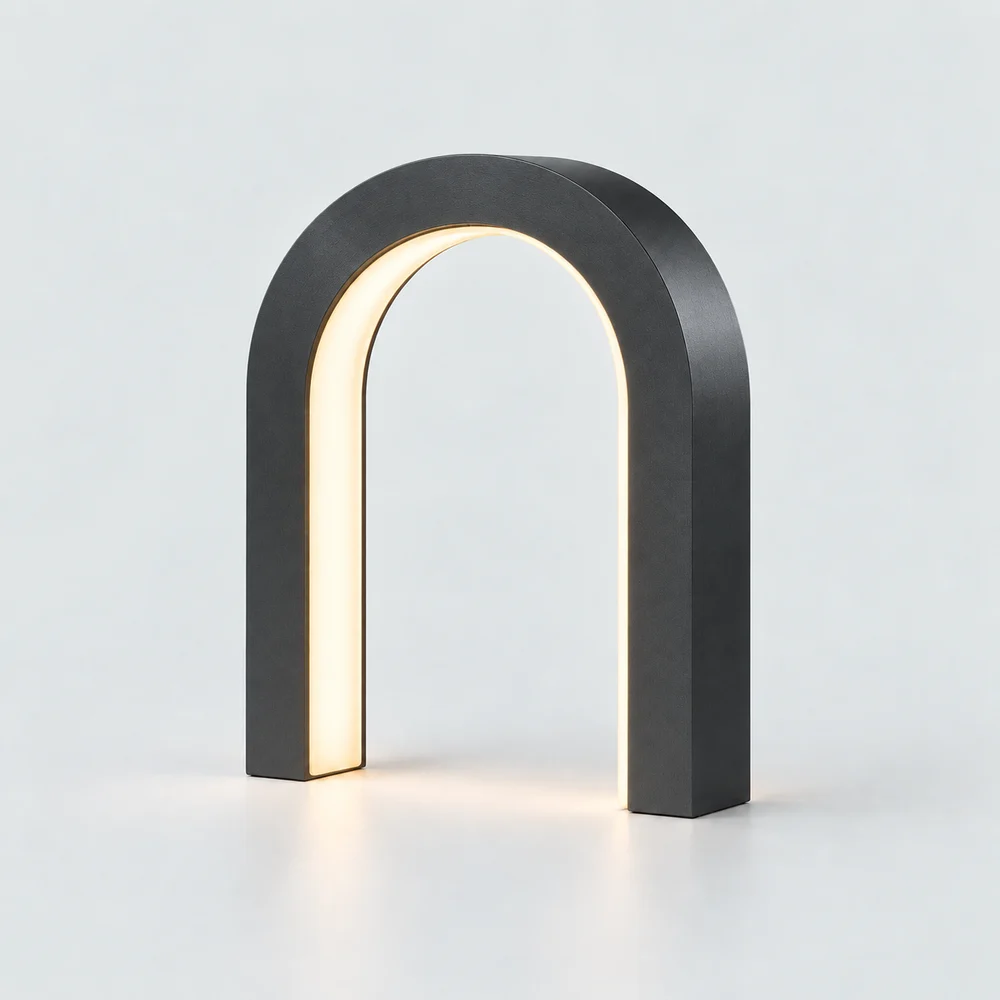

ARC / Sculptural lighting / Self-initiated concept
One curve.
An entire presence.
A lighting identity built around the space inside an object. A precise graphic system, original art direction and an architectural storefront make one sculptural table light the whole collection.
Explore the storefrontVisitor password: reepro

01 / The brief
Make the form clear.
Make the choice easy.
The fictional shopper cares about how a light occupies a shelf or sideboard. Before choosing a finish, they need to understand its silhouette, visual scale and proposed footprint. ARC uses a single anchor product with two finishes, so the page can give that decision enough space.
The brief called for a cool architectural identity with a usable path from object discovery to a native Shopify bag. No customer research, client commission, manufacturing, performance or commercial outcome is claimed.
02 / Identity system
Geometry, with room
to breathe.
Space Grotesk brings a geometric rhythm to the wordmark and large titles, without the heavy sports lettering of RIFT or Morrow’s softer skincare register. Mineral grey extends the studio surface into the page; ink defines controls, while oxidised orange gives section indices and feedback a precise signal.
Fine rules and numbered studies connect the identity to an architectural drawing. A full-object view establishes the silhouette; matching studio views make the finish comparison clear.
A small architecture of light.
#172329Mineral
#E4E9E9Signal
#BD3D16
03 / Art direction
The same object.
A closer understanding.
The campaign establishes the lamp’s relationship to stone planes and a doorway. A clean studio view then reveals the arch and inner light recess. Graphite was generated as a finish edit of that studio reference, preserving the view and proportions for a useful comparison.
The close-up concentrates on the tension between cool brushed metal and warm light. These concept studies explore the same arch silhouette across architectural and product views. They illustrate the design direction rather than a manufactured lamp.


04 / Shopping path
Inspect. Compare.
Then choose.
The storefront begins with an open object canvas, continues through a room study, and arrives at a finish workbench. Native radio controls make the chosen finish explicit; gallery browsing stays independent of the purchase selection. Illustrative dimensions answer scale questions without turning generated imagery into measurements.
The Shopify bag keeps the two finishes separate, updates whole quantities and calculates totals from catalog prices. Graphite is shown at 440 USD; brushed aluminium at 420 USD. Native form posts support add, update and removal without JavaScript, and the empty bag offers a clear return to the collection.
Try the finish selector and demo bag ↗
05 / Shopify source
A catalog-backed
Shopify theme.
The complete Liquid theme reads the selected catalog product and its variants, images, prices and availability. The homepage heading, hero image and product selection are editable. Its native product form submits the selected variant ID and quantity to Shopify.
The theme is published to its own Shopify development store. Visitor access, both finishes and native bag add, quantity update and removal have been checked. Morrow remains a separate skincare store.
06 / Process & limits
Project scope
and verification.
The arch silhouette links the campaign, studio views and dimension drawing. Selecting a finish updates its price and visible selection feedback; independent gallery controls offer aluminium, graphite and detail views. Browser checks exercise the gallery, bag and keyboard flow.
ARC is a self-initiated lighting concept in the Oviks Media portfolio. Identity, product presentation and storefront design centre on a single arch silhouette. Prices and dimensions are illustrative; the Shopify store is a development demonstration.
Browser and HTTP checks cover the tested layouts, published Shopify pages and native shopping interactions. Physical devices and assistive technology require further review. Production would also require a real product, safety and electrical specifications, real photography and a real catalog.